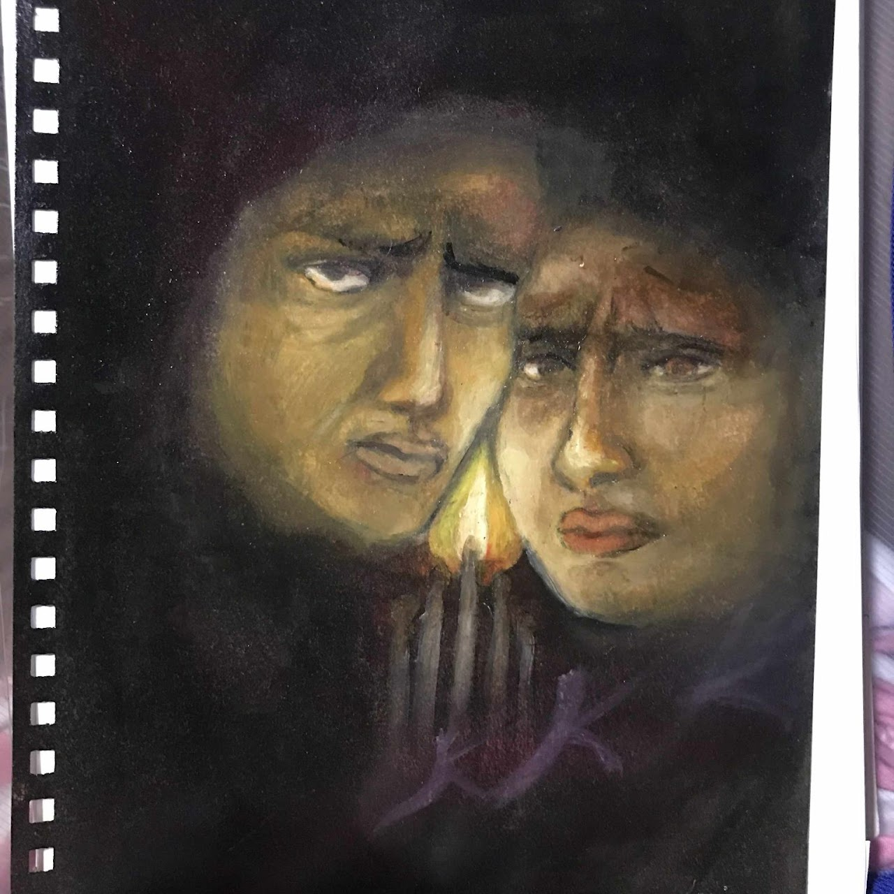
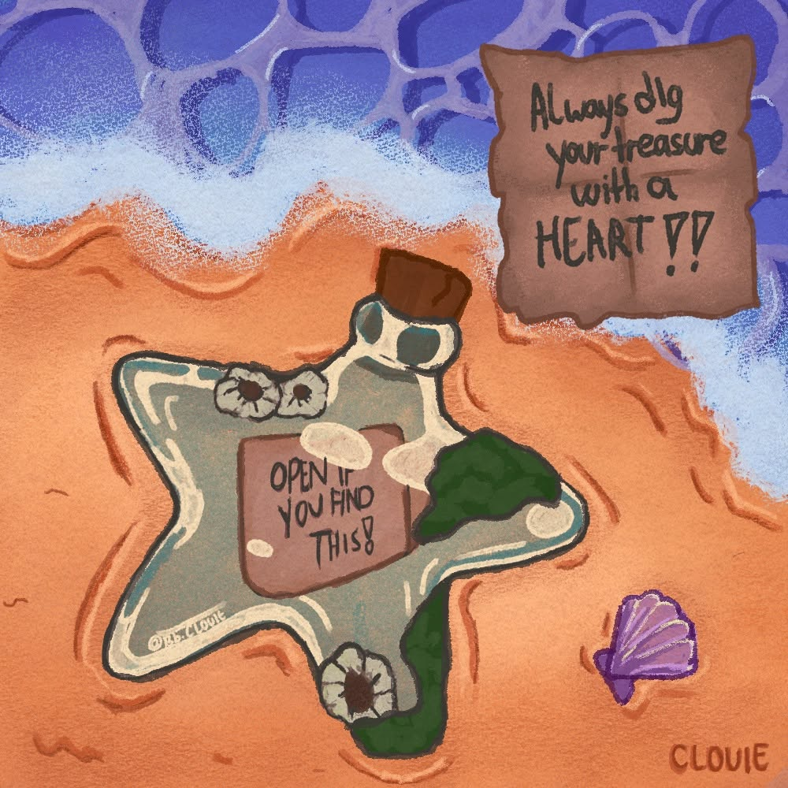
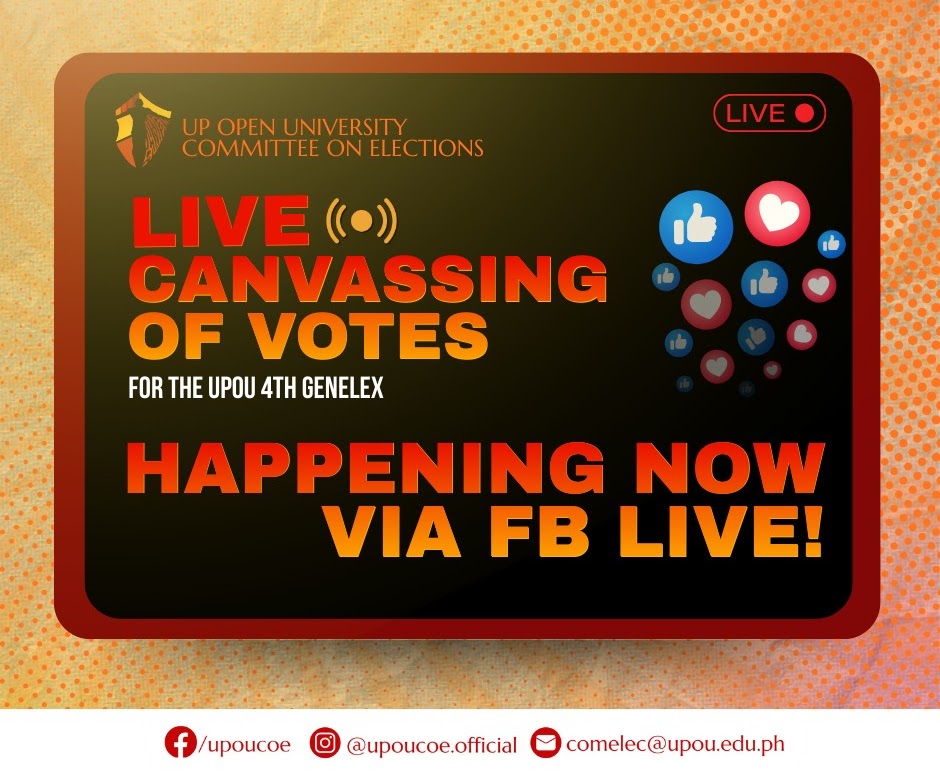
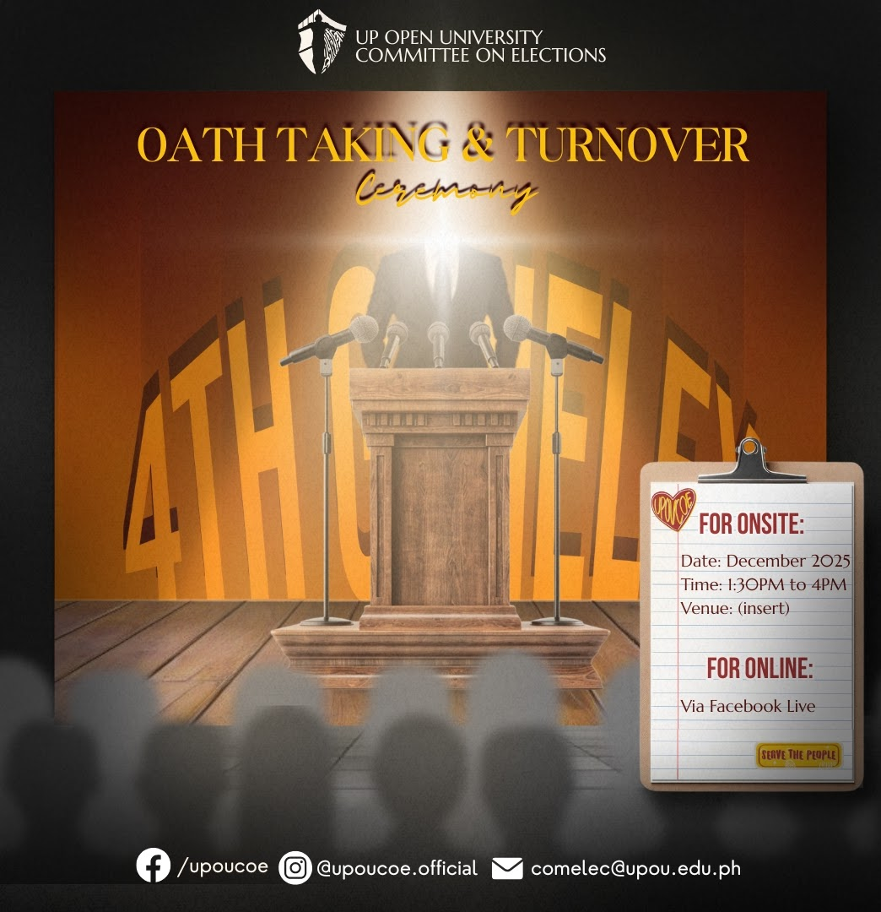

Traditional and Digital Art
I have been an artist since I was a kid, and these are some of my works.


Graphic Design
I have been into graphic design lately, and I joined UPOU COE to improve my pubmat layouts.

